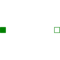

PartialRigidRigid connection of two translational 1D flanges |

|
Information
This information is part of the Modelica Standard Library maintained by the Modelica Association.
This is a 1-dim. translational component with two rigidly connected flanges. The fixed distance between the left and the right flange is defined by parameter "L". The forces at the right and left flange can be different. It is used e.g., to built up sliding masses.
Parameters (1)
| L |
Value: Type: Length (m) Description: Length of component, from left flange to right flange (= flange_b.s - flange_a.s) |
|---|
Connectors (2)
Extended by (3)
|
Modelica.Mechanics.Translational.Components.MassWithStopAndFriction Base model of Coulomb friction elements with stop |
|
|
Modelica.Mechanics.Translational.Components Rod without inertia |
|
|
Modelica.Mechanics.Translational.Components Sliding mass with inertia |